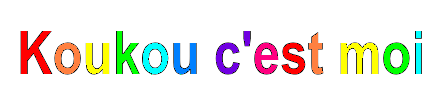

Je m'appelle Justine, je suis en Terminale cette année et j'ai crée mon premier site internet afin de regrouper mes créations, mes idées et me faire kiffer.
J'ai eu l'idée de faire un site Internet qui servirait de Portfolio afin de le transmettre aux Ecoles d'Art que je souhaiterai intégrer. J'ai toujours eu cette envie mais l'idée de coder m'effrayais énormément. Mais malgré tout, je me suis lancé dans ce long projet qui s'est avéré être passionant. Néanmoins j'ai encore des grosses lacunes malgré tout les tuto regardés et articles lu, donc soyez indulgent, c'est un travail tout jeune en cours de production, il risque d'y avoir des erreurs de codage que j'essaierai de résoudre, ou bien des pages qui ne sont pas encore accessibles.
Cependant j'adore l'esthétique que j'ai réussi à donner a mon site! Même si je n'en suis pas totalement satisfaite, actuellement, ca colle excatement avec ce que j'avais en tête. J'ai voulu représenter un paysage un peu enfantin, simple, tout en gardant des couleurs vives et un style personnel.
Des inspirations?
Je me suis inspiré des plus grands: Salut c’est cool. Ils ont un site officiel génial, très amusant, avec une vibe 2015(logique car c'est l'année de création du site) que j’ai tenté de reproduire dans mon travail en gardant évidemment mon identité artistique.
Les Gifs et les titres: fait moi même avec Paint.

Mes inspirations
C'est quoi la techno? Musique électronique, répétitive, prend place dans les années 80 aux Etats Unis à Detroit. La techno s'inspire d'autres genres musicaux comme la new wave, la soul, la funk, l'électro. On peut aussi retrouver des sous-genres dérivés de la techno comme la tech house, l'acid, la tribe, maximal et encore…
C'est qui les pionniers de la Techno? On parle souvent de Kevin Saunderson, Juan Atkins et Derrick May, 3 potes qui ensemble ont créé le label Metroplex en 1985, puis Transmat et KMS.
Pourquoi la techno? La techno ca fait danser, bouger, on se rassemble et on bouge, c'est la fête totale.
La Face cachée de la techno? Arrivée des Rave en 1992 en France. C'est très vite mal vu par les autorités et la Presse : les Rave seraient d'après le journal L'humanité, un lieu de débauche remplie de drogue et de groupe à caractère extremiste (Nazi). Donc ça finit par être interdit, fini les raves…..Et non! En 1996, à Lyon, une association appelée Technopol est créée afin de promouvoir les musiques et cultures électroniques. Des Techno Parade sont ainsi organisées pour redorer l'image de ce genre musical et faire kiffer les amateurs de techno. On y retrouvera notamment le célèbre duo Daft Punk avec le titre Stardust qui va être un énorme succès.
Mais du coup c'est qui ce groupe ??? Définition wikipédia : Salut c'est cool est un groupe de musique électronique humoristique français, originaire de Paris. Souvent associé au mauvais goût, au kitsch et au ridicule, le groupe précise pourtant ne pas les revendiquer. Obsédé de la dérision, il pratique un genre électro-punk avec un côté poétique et volontairement désordonné qu'il qualifie de « techno variété / Cyber troubadour » dans la lignée de Sexy Sushi.
J'ai découvert la techno à travers leur son le plus connu : “Techno toujours pareil”, et c'est comme ça que je suis devenu très très fan. J'adore ce groupe. Le rythme remplit mon cœur, ça me fait divaguer, me donne envie de danser. Les textes sont bien farfelus, drôles, ou “ridicules” comme dit wiki mais moi je pense pas. “Comprendre”, “Les Globules”, “Révélations mystiques”, “L'or, le soleil”, ce sont des titres que j'écoute en boucle. Je les kiffent aussi bien pour les paroles que pour la mélodie qui alterne entre soft et hard. Je ne saurai même pas définir en vrai ce qu'ils racontent, il faut écouter pour comprendre, mais au fond c'est même pas comprendre, c'est plus le sentir, le ressentir dans ton âme, dans ton corps entier. Bref, salut c'est cool c'est trop cool. Mettez le son a fond.
C'est qui lui?
Alors je l'ai découvert dans la vidéo exceptionnelle : "le monde perturbant des jeux de Kanoguti - Findings N°106" de Feldup (d'ailleurs lui aussi c'est une grande inspiration, j'en parlerai un jour). Du coup kanoguti c'est un mec hyper talentueux qui a touché vraiment à plein de domaines artistiques : le développement de jeux vidéo, la musique, le dessin numérique.. Il a une vision artistique folle qui peut déranger, faire peur ou rendre inconfortable.
Ces jeux sont terrifiants, il y a une atmosphère très angoissante et des effets psychédéliques. Les jeux semblent constamment repousser les joueurs de manière à ce que nous ne voyons pas le réel sens du jeu lors de la première partie. Kanoguti est atteint de troubles schizophrènes, il a connu une grande période de dépression durant son adolescence, en plus des souffrances qu'il a connues à cause de sa maladie. Ainsi, il a clairement intégré son vécu et ses expériences dans ses créations, et on le ressent, on ressent ses souffrances, ses traumatismes, ses angoisses.. c'est très intime. Aujourd'hui il va mieux btw, il a bien grandi (oui il avait genre 15-16 ans, voir plus jeune quand il a créé la majorité de ses oeuvres). Si vous voulez en savoir plus sur ce mec passionnant, rdv sur son site officiel pour découvrir un peu à l'aveugle, ou bien sur la chaîne du goat, Feldup.
C'est quoiiiii?